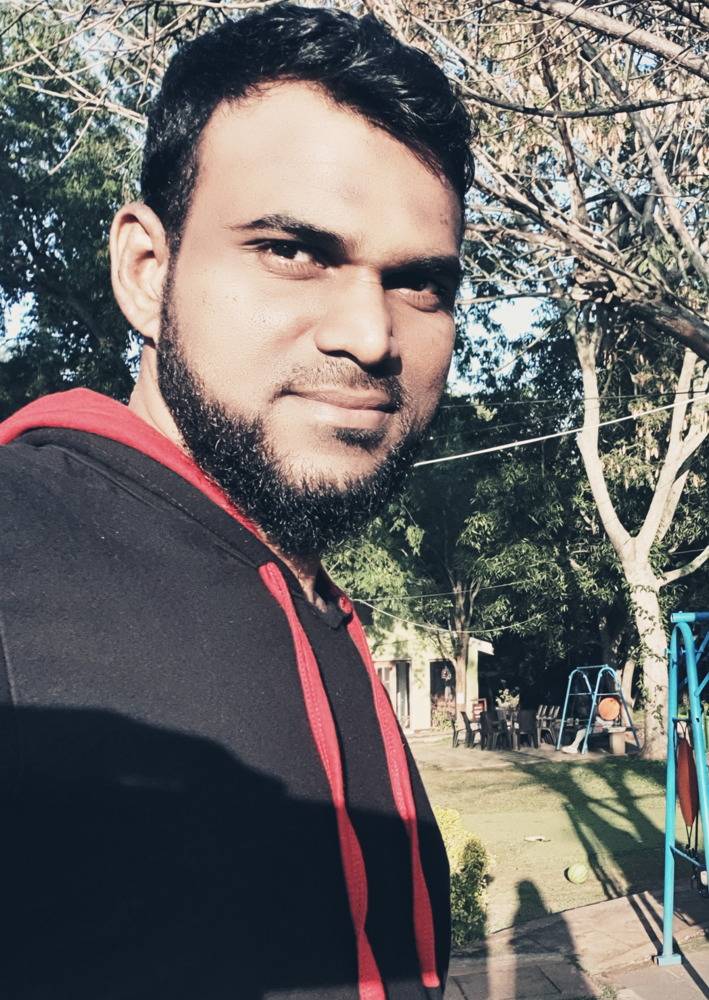

Basheer Ahamed
Associate Director
15+ years of IT experience in providing Architecture & Functional Solution Design of Big Data Applications, ETL CoE, Development and Implementation of large size applications in Retail Domain with substantial experience in designing and executing solutions for complex business problems involving large scale data lake on Hadoop ecosystems.
Building My Personal Webpage is my current passion!!!
Summary
- ➢ Working experience on popular Hadoop distribution platforms such as Cloudera and DataBricks implementing Big Data Applications.
- ➢ Have deep understanding of Technical and Architectural knowledge on Big Data Hadoop ecosystems such as HDFS, Map Reduce, Hive, Pig, Spark, Impala, Hbase, Sqoop and Oozie and Azure ecorsystems.
- ➢ Responsible for Delivery of large and significant applications in the organization.
- ➢So lutioning , Delegates and monitors work to meet the SLA/deadlines.
- ➢ Ability to understand business rules & requirements, collaborate with various stakeholders and perform key role in E2E project successful execution.
- ➢ 3+ years of Onsite experience in requirement gathering, analysis, design and implementation of projects by closely interacting with Clients based out of U.S locations .
- ➢ Experience in leading ETL CoE platform for the organisation wide including vendor management Evaluate the ETL/ELT tools and recommend the most suitable solution for the Business needs.
- ➢ Extensively worked on data Extraction, Transformation and Loading data from various sources like Oracle, Netezza, DB2 and Flat files
- ➢ Successful in doing POC & meeting new technical challenges and finding solutions to Business needs/problems.
- ➢ Hands on experience in Python & Unix Shell scripting.
- ➢ Gaining knowledge on Machine Learning.
- ➢ Strong knowledge on Data Modeling in data warehouse and Exposure to Tableau for BI solution.
- ➢ Excellent communication , documentation and presentation skills.
- ➢ Excellent team player in Agile team environments with an ability to perform individually, good interpersonal and analytical skills.
- ➢ Experience in publishing White Papers on Big Data.
- ➢ Awarded for best faculty for training conducted.
- ➢ Bagged 3rd prize in 2016 Nielsen Hackathon.
- ➢ Recruitment panel member for experienced professional hiring and also Campus recruitment for freshers in reputed colleges in Chennai.
Technical Expertise
Have hands-on experience in various techonologies.
Technology Stack

Databases, platforms, Config management tools, Certifications, Cloud techonologies
View project / case studyWork Experience
Solution Architect – Big Data
Nielsen Company
Retail Business
2016 to til date
Nielsen Collects 2B Electronic records collected weekly from Retailers, 3M store level data annually, 25M+ characteristics collected from 30M products, 1.7M+ store audit visits monthly, 16M consumer surveys per year. Various factory around the globe stores these data, process and provide insights to clients. Connected system consolidates 17 current data factories into a single platform by storing all data into Azure DataLake so that Connected BI Apps/Dashboard can connect all insights by various legacy application to single truth of the report.
Transformation Engine as an interim process to take Factory generated client data and Transform it to a consumable format (PDM - Presentation Data Model) for connected BI Apps & Dashboards to allow easy consumption and enablement of Nielsen Connected Buy Data. TE services Includes Aggregation, Calculation, Merging, Transformation, XML & JSON Generation which Support the Transformation Needs of the Connected Buy Business through the Charter Client.
Responsibilities:
- Delivery of Computation Framework Engine (2 Weeks Sprint).
- Solution Architect.
- Data Modeling
- SME.
- POC - adoption of new technologies.
Project Location: Chicago & Chennai
Technical Platform: DataBricks,Spark,Scala, Spring Boot, Airflow, Snowflake, Azure Data Lake, Angular
Education
B.E (Computer Science & Engineering)
Priyadarshini Engineering, Madras University, India
2000-2004 batch with First Class distinction